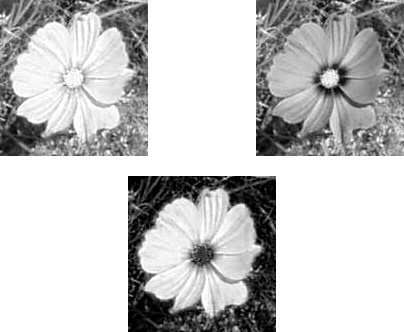
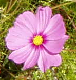
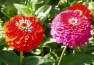
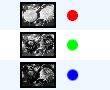
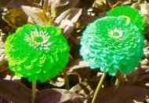

Figure 16.172. Example for the “Compose” command

Decomposed image (RGB decomposition)

“Compose” applied
This command constructs an image from several grayscale images or layers, for instance from extracted RGB, HSV, etc. components. You can also build an image from grayscale images or layers created independently.
You can access this command from the main menu through → → . It is enabled if your image is grayscale.
- Compose Channels
-
Here you can select the color space to be used: RGB, HSV, etc. The available options are described in the Decompose command.
- Channel Representation
-
Allows you to select which layer or image will be used for each channel. You may use this option, for example, to exchange color channels:
Figure 16.174. Channel Representation example: exchange two channels

Original image

Decomposed to layers

Composed image after using Channel Representation to switch red and green channels
Mask Value: Instead of selecting a layer or an image to build the channel, you can give the channel a value from 0 to 255. But note that at least one channel must be formed from a layer or image.
![[Tip]](images/tip.png)